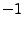
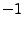

Next: Type casting Up: Data types Previous: Enumerations Contents Index
As discussed in Section 5.4, SIDL supports both normal and raw arrays (i.e., r-arrays). Normal SIDL arrays can be used by any supported language; whereas, r-arrays are restricted to numeric types and use in languages such as C, C++, and Fortran. This subsection discusses both within the context of FORTRAN 77 bindings. More information on the FORTRAN 77 version of the SIDL array API can be found in Subsection 5.4.
The difference in how normal SIDL arrays and r-arrays are accessed is profound. A normal SIDL array is passed as an integer*8, and accessed using an API or by converting the array data to an index into a known array. R-arrays appear like normal FORTRAN 77 arrays, so there is a big incentive to use r-arrays for performance purposes, when appropriate.
The client-side interface for the solve example introduced in Section 5.4 behaves as if it is a FORTRAN 77 function with the following declarations:
subroutine num_Linsol_solve_f(self, A, x, m, n, exception)
implicit none
C in num.Linsol self
integer*8 self
C in int m, n
integer*4 m, n
C out sidl.BaseInterface exception
integer*8 exception
C in rarray<double,2> A(m,n)
double precision A(0:m-1, 0:n-1)
C inout rarray<double> x(n)
double precision x(0:n-1)
end
NOTE Array indices go from
0 to m instead of the normal 1 to m. This
was a concession to the C/C++ programmers who have to deal with the
fact that A is stored in column-major order.
Array indices go from
0 to m instead of the normal 1 to m. This
was a concession to the C/C++ programmers who have to deal with the
fact that A is stored in column-major order.
The remainder of this section is dedicated to describing how normal SIDL arrays are accessed. The normal SIDL C function API is available to create, destroy, and access array elements and meta-data -- with _f appended to subroutine names but no extra exception arguments.
For dcomplex, double, fcomplex, float, int, and long SIDL types, a method is provided to get direct access to array elements. For other types, you must use the array API to access elements. For SIDL type X, a FORTRAN 77 function called sidl_X__array_access_f provides direct access, as illustrated below. This will not work if your FORTRAN 77 compiler does array bounds checking, however.
integer*4 lower(1), upper(1), stride(1), i, index(1)
integer*4 value, refarray(1), modval
integer*8 nextprime, refindex, tmp
lower(1) = 0
value = 0
upper(1) = len - 1
call sidl_int__array_create_f(1, lower, upper, retval)
call sidl_int__array_access_f(retval, refarray, lower,
$ upper, stride, refindex)
do i = 0, len - 1
tmp = value
value = nextprime(tmp)
modval = mod(i, 3)
if (modval .eq. 0) then
call sidl_int__array_set1_f(retval, i, value)
else
if (modval .eq. 1) then
index(1) = i
call sidl_int__array_set_f(retval, index, value)
else
C this is equivalent to the sidl_int__array_set_f(retval, index, value)
refarray(refindex + stride(1)*(i - lower(1))) =
$ value
endif
endif
enddo
To access a two-dimensional array, the expression referring to element
i, j is
refarray(refindex + stride(1) * (i - lower(1)) + stride(2) *
$ (j - lower(2))
The expression referring to element i, j, k
of a three-dimensional array is
refarray(refindex + stride(1) * (i - lower(1)) + stride(2) *
$ (j - lower(2)) + stride(3) * (k - lower(3))
Software packages such as LINPACK or BLAS can be called, but the stride should be checked to make sure the array is suitably packed. stride(i) indicates the distance between elements in dimension i, where a value of 1 means elements are packed densely in dimension i. Negative stride values are possible and, when an array is a slice of another array, there may be no dimension with a stride of 1.
NOTE For a dcomplex array, the reference array should be a
Fortran array of REAL*8 instead of a Fortran array of double complex
to avoid potential alignment problems. For a fcomplex
array, the reference array is a COMPLEX*8 because we don't anticipate
an alignment problem in this case.
For a dcomplex array, the reference array should be a
Fortran array of REAL*8 instead of a Fortran array of double complex
to avoid potential alignment problems. For a fcomplex
array, the reference array is a COMPLEX*8 because we don't anticipate
an alignment problem in this case.